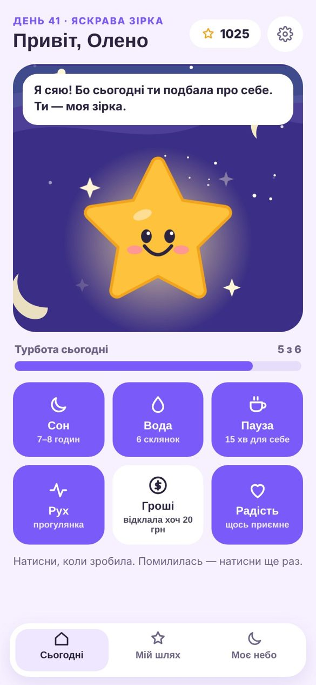
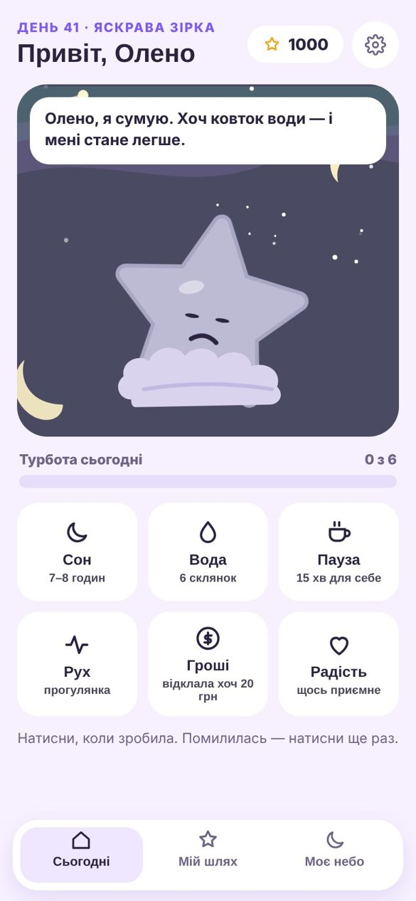
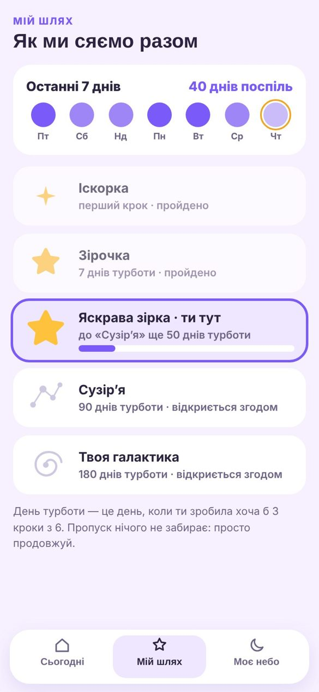
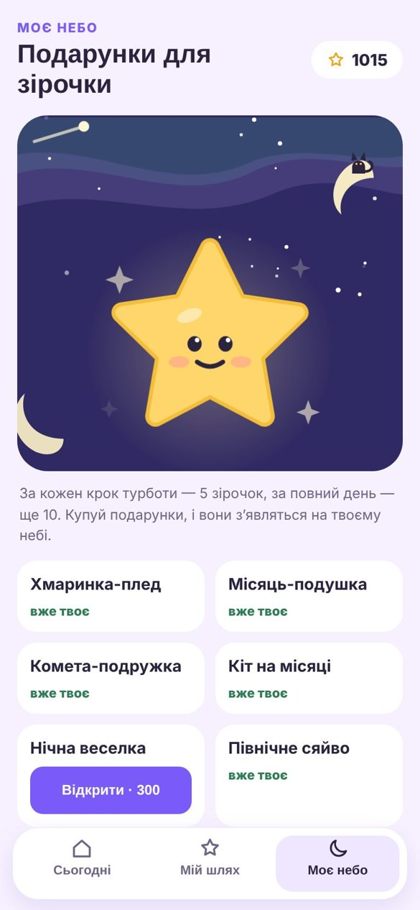

← Накопич
Новинка · планер-гра в телефоні
Друга я
Про всіх дбаєш, а про себе — «потім»? Тепер у тебе є маленька зірочка, яка живе в телефоні. Вона сяє, коли ти спиш, пʼєш воду, відпочиваєш і робиш щось для себе. Забула про себе — зірочка тьмяніє й ховається під хмаринку. Подбай про себе — і вона знову засяє.




Спробувати демо безкоштовно →
Що всередині
- Жива зірочка: дихає, кліпає, плаває в небі, радіє й сумує разом з тобою. Ти сама даєш їй імʼя
- 6 маленьких кроків турботи щодня: сон, вода, пауза, рух, гроші, радість. Навіть один крок її зігріває
- Зірочки-нагороди за кожен крок і 8 подарунків для твого неба: місяць-подушка, комета, кіт на місяці, північне сяйво, корона…
- Ріст за рік: іскорка → зірочка → яскрава зірка → сузірʼя → твоя галактика
- Серія днів і календар турботи — видно, як ти змінюєшся
- Без штрафів: пропустила день — нічого не згорає, просто продовжуй
- Працює в телефоні як застосунок, навіть без інтернету
Як отримати
- Напиши «ДРУГА» в Дірект Instagram @nakopych_challenge
- Оплати на картку — реквізити надішлемо у відповідь
- Отримай посилання й особистий код, відкрий у телефоні та додай зірочку на головний екран
−25% для перших 10 покупниць1 000 грн750 грн
для перших 10 · далі 1 000 грн
Написати «ДРУГА» в Дірект
Особистий код працює на одному телефоні. Змінила телефон — напиши нам, перенесемо прогрес.